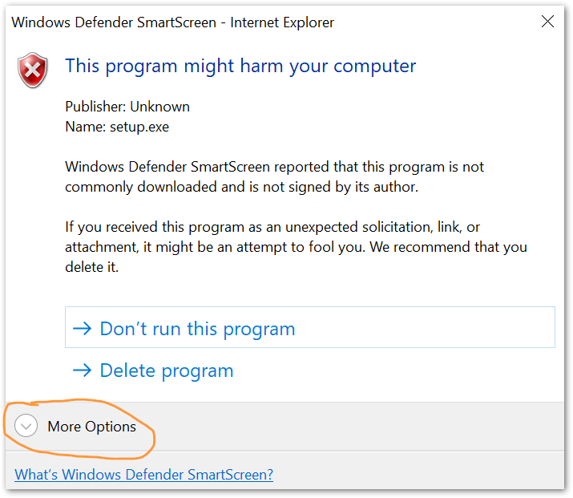

Integrated Air Information Platform
The IAIP is used by the Georgia EPD to collect and organize data required by the Air Protection Branch. Documentation can be found on the IAIP Documentation site.
Support
For account management and general application support, please contact your supervisor in EPD or Sean Taylor. To report an error or bug, please create an EPD-IT Support Ticket.
Installation
Click this button to download and run the setup file.
The installer does not require admin permissions. You will likely get one or more security alerts such as those shown below when you run the installer. Click the “More info” or “More options” link, then click the button labeled “Run anyway”.



Connecting remotely
The IAIP may be used from remote locations (outside of EPD offices) only by connecting through the DNR VPN. Instructions for accessing the VPN are available on the DNR Intranet.
Your username and password for the VPN are the same as the ones you use to log in to your work computer (not the same as your IAIP username/password).
What’s New
See the change log.
License
The IAIP is Copyright © Georgia Air Protection Branch. This product is licensed only to employees of the State of Georgia.